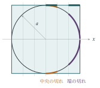

STEP I 2001、第6問
先に進む前に問題を読んでおこう。問題は STEP Support Programme の問題データベースにある： step.maths.org/questions/01-s1-q6
導入
球形のパンを、等しい厚さの切れに切り分ける。中央付近の切れは厚みのある円板で、縁にパンの耳（crust）が細い帯状についている。両端付近の切れは小さな帽子のような形で、ほとんど耳ばかりに見える。端の切れのほうが耳が多いに違いない、と思うだろう。
そうではない。中央に近いところで切っても端に近いところで切っても、どの切れにもまったく同じ面積の耳がついている。中央の細い帯は周の長さは大きいが、ほぼ垂直に立っている。端の帽子は周の長さは小さいが、急な傾きをもつので、その耳はより広い幅にわたって引き伸ばされている。この二つの効果がちょうど打ち消し合うのである。これはアルキメデス（Archimedes）の定理であり、彼はこの定理をたいへん大切にしていたので、自分の墓に円柱に内接する球を刻むよう頼んだほどである。問題の後半は少し遊び心のある規則の話であるが、同じ計算に基づいている。
取りかかる前に
半径 \(a\) の球は、どの曲線を \(x\) 軸のまわりに回転させれば得られるか。その曲線について \(\frac{\mathrm{d}y}{\mathrm{d}x}\) はどうなるか。
半円 \(y = \sqrt{a^2 - x^2}\), \(-a \leq x \leq a\) を回転させると球が得られる。このとき \(\frac{\mathrm{d}y}{\mathrm{d}x} = \frac{-x}{\sqrt{a^2 - x^2}} = -\frac xy\) である。このことを覚えておこう。傾きは両端（\(x \to \pm a\)）では急で、中央では緩やかである。これはまさに導入で述べた効果である。
順を追って解く
段階 1 耳の面積の公式が簡単になる
半円について \(y\sqrt{1 + (y')^2}\) を計算せよ。驚くべきことが起こる。
\(y' = -x/y\) より、 \[1 + (y')^2 = 1 + \frac{x^2}{y^2} = \frac{y^2 + x^2}{y^2} = \frac{a^2}{y^2},\] したがって \(y\sqrt{1 + (y')^2} = y \cdot \frac{a}{y} = a\) となり、定数である！よって、任意の二つの平面 \(x = x_1\) と \(x = x_2\) の間の耳の面積は \[2\pi\int_{x_1}^{x_2} a\,\mathrm{d}x = 2\pi a(x_2 - x_1).\] となる。これは平面の間の距離だけで決まり、平面の位置にはよらない。
段階 2 耳の面積は切れの数に比例する
パンを厚さ \(h\) の切れに切り分けると、各切れの耳の面積は \(2\pi ah\) で、すべての切れで等しい。一方の端からでも、両端からでも、どこからでも何切れか食べれば、残った耳の面積は \(2\pi ah\) に残った切れの数を掛けたものである。■
段階 3 耳が多いための条件
問題のヒントは一方の端から切れを食べたときに残るパンについて述べているので、それに従おう。切れを端 \(x = a\) から食べていき、残りが \(x = -a\) から \(x = -a + t\) までであるとする。「何切れ食べた後でも」という規則は、パンをどれだけ細かく切っても成り立つべきなので、\(t\) は \(0\) から \(2a\) までの任意の値をとれるものとして扱う。（段階 4 では両端から食べる場合を考える。）
与えられた公式を使って \(V\) を計算せよ。置換 \(s = x + a\) を使うと計算がすっきりするかもしれない。
\(s = x + a\) とおくと \(y^2 = a^2 - x^2 = a^2 - (s - a)^2 = 2as - s^2\) であるから、 \[V = \pi\int_0^t (2as - s^2)\,\mathrm{d}s = \pi\left(at^2 - \frac{t^3}{3}\right), \qquad A = 2\pi at,\] となり、 \[\frac{V}{A} = \frac{at^2 - t^3/3}{2at} = \frac t2 - \frac{t^2}{6a}.\] である。
規則は何切れ食べた後でも \(V/A < 1\) であること、すなわち \(0 < t \leq 2a\) を満たすすべての \(t\) について \(V/A < 1\) であることを要求している。この範囲における \(\frac t2 - \frac{t^2}{6a}\) の最大値はいくらか。
\(t\) で微分すると、\(\frac12 - \frac{t}{3a} = 0\) となるのは \(t = \frac{3a}{2}\) のときであり、これは範囲 \((0, 2a]\) の内部にある。また、これは最大値を与える（この式は \(t\) について上に凸の放物線である）。最大値は \[\frac{3a}{4} - \frac{9a^2/4}{6a} = \frac{3a}{4} - \frac{3a}{8} = \frac{3a}{8}.\] である。耳の多いパンであるためにはすべての \(t\) について \(V/A < 1\) でなければならず、特に \(t = \frac{3a}{2}\) においてもそうであるから、\(\frac{3a}{8} < 1\)、すなわち \(a < \frac83 = 2\frac23\) メートルである。■
段階 4 問題の先へ：\(2\frac23\) で十分か
問題が求めているのは、半径が満たさなければならない条件だけである。\(a < \frac83\) は十分条件でもあるだろうか。両端から切れを食べる場合はどうなるか。
十分ではない。両端から食べると中央に帯が残るが、中央の帯は端の帽子よりも、耳に対してパンの量が多い。帯 \(-\frac w2 \leq x \leq \frac w2\) については \[V = \pi\int_{-w/2}^{w/2} (a^2 - x^2)\,\mathrm{d}x = \pi\Bigl(a^2w - \frac{w^3}{12}\Bigr), \qquad A = 2\pi aw, \qquad \frac VA = \frac a2 - \frac{w^2}{24a},\] であり、薄い帯ではこれは \(\frac a2\) に近い。たとえば、\(2\frac23\) を十分下回る半径 \(2.4\) メートルのパンを四切れに切り、両端の二切れを食べると、\(w = a\) の帯が残り、\(\frac VA = \frac{11a}{24} = 1.1\) となる。実際、どのような切れの組についても \(\frac VA < \frac a2\) であるから、どこから切れを食べてもよいとすると、パンが耳の多いパンであるのはちょうど \(a \leq 2\) メートルのときである。問題の \(2\frac23\) は正しい必要条件（necessary condition）であるが、規則は問題が匂わせているよりも厳しいのである。
振り返り
積分する前に簡単にせよ。 耳の面積の被積分関数（integrand）は複雑に見えたが、実は定数であった。被積分関数は、取りかかる前に必ず簡単にしておこう。
「任意の」を注意深く読め。 条件は何切れ食べた後でも成り立たなければならなかったので、パン全体についての値（\(\frac a3\) である）ではなく、\(V/A\) の最大値が必要であった。
簡単な計算から意外な答え。 耳の面積が等しいという性質はありそうにないように聞こえるが、計算はたった二行である。
背後にある数学
アルキメデスは『球と円柱について』（On the Sphere and Cylinder）において、二つの平行な平面に挟まれた球の帯の面積が、球に外接する円柱（cylinder）からその平面が切り取る帯の面積に等しいことを証明した（図 4.8.1）。我々の計算はまさにこの定理である。半径 \(a\) の円柱は単位長さあたり \(2\pi a\) の耳の面積をもち、球も同じである。球全体をとると、その表面積（surface area）は円柱の側面積 \(2\pi a \times 2a = 4\pi a^2\) に等しい。アルキメデスは、このことを、球の体積が円柱の体積の三分の二であるという事実とともに、自らの最高の業績とみなしていた。紀元前 75 年にシラクサを訪れたキケロ（Cicero）は、墓に刻まれた球と円柱を探すことで、草に覆われたその墓を見つけ出した。

地球の地図
帽子箱定理を使うと、面積を保つ地球の地図を描くことができる。地球儀上の各点を水平に外側へ外接円柱上に射影し、それから円柱を切り開いて平らにする。球の帯は同じ面積をもつ円柱の帯に写され、任意の領域についても同じことが成り立つ。これがランベルト（Lambert）正積円筒図法（1772年）である。極付近では形が大きくゆがむが、面積は正確である。これに対し、おなじみのメルカトル（Mercator）図法ではグリーンランドがアフリカと同じくらいの大きさに見える（実際には約十四分の一である）。ガウス（Gauss）の有名な定理である驚異の定理（Theorema Egregium、1827年）は、球の地図で面積と形の両方を保つものは存在しないことを示している。地球の平面地図はどれも、何かをゆがめなければならないのである。
球面上の無作為な点
実用的な帰結を一つ紹介しよう。球面上の点を一様に無作為に選ぶには、緯度と経度を一様に選べばよいと考えるかもしれないが、そうすると点は極の付近に密集してしまう。帽子箱定理は正しい方法を与える。高さ \(x\) を \(-a\) から \(a\) の間で一様に選び、経度を \(0\) から \(2\pi\) の間で一様に選べばよい。面積は高さに比例するので、これはちょうど一様分布になる。物理学やコンピュータグラフィックスのシミュレーションでは、この方法が使われている。（驚くべきことに、これが成り立つのは三次元の場合だけである。四次元以上の球面についての対応する主張は成り立たない。）
思考のスキル
計算の結果、定数のような思いがけず単純なものが出てきたら、立ち止まってその理由を問え。たいていは幾何学的な理由があり、それを見つけることにこそ本当の理解がある。
ここで被積分関数 \(y\sqrt{1 + (y')^2}\) が定数になったのは、球面上では傾きの急さと軸からの距離がちょうど互いに補い合うからである。それがアルキメデスの定理である。
次の一歩
パン全体。 切っていないパン全体について \(V/A = \frac a3\) であることを示せ。問題の条件が \(\frac a3 < 1\) よりも満たしにくいのはなぜか。
熱帯。 地球の表面のうち、南緯 \(23.4^\circ\) から北緯 \(23.4^\circ\) の間にある部分の割合はいくらか。（地球を球とみなせ。面積は高さに比例するので、必要なのは \(\sin 23.4^\circ\) だけである。）
他の形。 放物面（paraboloid）の形をしたパン（\(y = \sqrt x\) を \(x\) 軸のまわりに回転させたもの）では、一切れあたりの耳の面積が定数にならないことを示せ。どのような曲線 \(y(x)\) について \(y\sqrt{1 + (y')^2}\) は定数になるか。（微分方程式（differential equation）を解け。）
体積。 体積の公式を使って、アルキメデスが見出したとおり、球の体積が外接円柱の体積の三分の二であることを示せ。
さらに学ぶために
Sherman Stein, Archimedes: What Did He Do Besides Cry Eureka?（Mathematical Association of America）。アルキメデスの数学を現代の読者向けに解説した本。
Timothy Gowers, Mathematics: A Very Short Introduction（Oxford University Press）。幾何学の章で曲面の幾何学を紹介している。
John Snyder, Flattening the Earth（University of Chicago Press）。地図投影法の二千年の歴史。